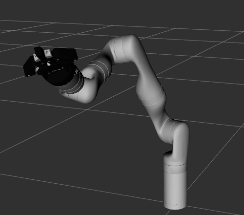
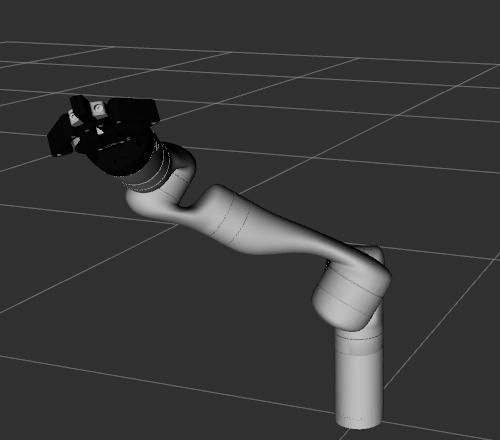

B3 · Inverse kinematics
The opposite question: given where you want the hand, which joint angles get it there? A flat arm has two answers, the Gen3 has infinitely many, and you will see two of them side by side.
1. Goal
Forward kinematics (B2) turns joint angles into a hand pose, always with one answer. A robot needs the reverse: you say "put the gripper at this pose" and something must find the seven joint angles. That is inverse kinematics (IK), and it is what MoveIt (B4) does for you. Here you do it yourself, once, so that you know what is inside and why a 7-joint arm behaves the way it does.
At the end of this lesson you will have:
- solved the flat two-link arm by geometry, and seen its two solutions and the limit of its reach,
- run a numerical IK program for the Gen3, and got different joint angles for the same hand pose from different starting guesses,
- sent two of these solutions to the fake arm, and seen the same hand pose in
tf2_echowith a very different elbow in RViz, - moved the joints while the hand stays still (the null space), and seen what happens when a target is out of reach.
2. Concepts
Two links: solve by geometry
Take the flat arm of B2 and a wanted hand position (x, y). The base, the elbow and the hand form a triangle with sides l1, l2 and the distance d = √(x² + y²) from base to hand. The law of cosines gives the elbow angle, then θ1 follows from the direction of the hand:
cos θ2 = (x² + y² − l1² − l2²) / (2 · l1 · l2) θ2 = ± arccos(cos θ2) θ1 = atan2(y, x) − atan2(l2 · sin θ2, l1 + l2 · cos θ2)
The sign of θ2 gives the two solutions: elbow bent one way or the other. And if |cos θ2| is more than 1 there is no triangle: the point is out of reach. The hand can only be between |l1 − l2| and l1 + l2 from the base (0.1 m to 0.7 m for l1 = 0.4, l2 = 0.3).
Seven joints: infinitely many solutions
A hand pose is 6 numbers (B1) and the Gen3 has 7 joints, so after the hand has what it needs there is one joint's worth of freedom left over: a whole family of joint angles gives the same hand pose. Physically, the elbow can swing around the line between the shoulder and the wrist while the hand does not move. This is the redundancy of B1.
Numerical IK: small steps toward the target
There is no simple formula for 7 joints, so a program searches. It uses the forward kinematics of B2 and repeats a small loop:
- Compute the error e: 6 numbers, how far the hand is from the target (3 for position in metres, 3 for the rotation still missing in radians).
- Find how much the error changes when each joint moves a tiny bit (one millionth of a radian). Put this in a table of 6 rows (the hand's 6 numbers) and 7 columns (the joints): the Jacobian J. It says: "a small joint change Δq changes the error by about J · Δq".
- Ask for the joint change that cancels the error: J · Δq = −e. This has many solutions (7 unknowns, 6 equations), so take the smallest one. The matrix that does it is the pseudo-inverse J⁺:
Δq = −J⁺ · e. - Add Δq to the joints and go back to step 1, until the error is below one micrometre.
Near a singularity, a pose where some hand motions become impossible (the arm stretched straight out is one: you cannot move the hand along the arm's length by turning joints), J⁺ asks for enormous joint changes. A small damping λ in the formula, Δq = −Jᵀ (J Jᵀ + λ² I)⁻¹ e, avoids that: it is called damped least squares. The program also limits each step to 0.3 rad and keeps joints 2, 4, 6 inside their URDF limits (B1).
The answer depends on where the search starts, because the loop goes to a solution near its start. Different starting guesses end in different members of the family.
The null space
The Jacobian has 7 columns but its table can hold at most 6 independent directions, so there is at least one combination of joint motions that gives no hand motion at all: J · Δq = 0. The set of all such Δq is the null space of J. The matrix N = I − J⁺ · J takes any joint push d and keeps only its part that does not move the hand. To move the elbow while the hand holds still, push in the null space and also keep correcting the small drift:
Δq = −J⁺ · e + N · d
The first term holds the pose, the second moves the joints "for free". This is how a controller keeps a hand on target while it also steers the elbow away from an obstacle, or away from a joint limit.
3. Do it
-
Get the programs
The package
code/b3-ikhas three programs in Python and in C++:ik2(the flat arm),ik_gen3(the Gen3) andnull_motion. They do not use ROS: they only calculate. Build them like the package of B2.host Open a terminal in the
ros2-tutorialfolder and enter a container (this is T1):docker/run_ros2.shhost Open a terminal in the
ros2-tutorialfolder (this is T1).container
cd code/b3-ik colcon build source install/setup.bashStarting >>> b3_ik Finished <<< b3_ik [4.05s] Summary: 1 package finished [4.09s]
(The times differ on your computer.)
-
Two links: both solutions, and the edge of the reach
The program is the three formulas of the concepts:
#!/usr/bin/env python3 """Inverse kinematics of a flat arm with two links, by geometry. ik2.py X Y [L1 L2] hand position in metres, lengths in metres (default 0.4 and 0.3) Prints the two joint settings (elbow one way and the other) that put the hand at (X, Y), in degrees. """ import math import sys x, y = (float(a) for a in sys.argv[1:3]) l1, l2 = (float(a) for a in sys.argv[3:5]) if len(sys.argv) >= 5 else (0.4, 0.3) # Law of cosines in the triangle base - elbow - hand: it gives the angle at the elbow. cos_theta2 = (x * x + y * y - l1 * l1 - l2 * l2) / (2 * l1 * l2) if abs(cos_theta2) > 1: print(f"unreachable: the hand can be between {abs(l1 - l2):.3f} and {l1 + l2:.3f} m from the base, " f"this point is {math.hypot(x, y):.3f} m away") sys.exit(1) for sign, name in ((+1, "elbow down"), (-1, "elbow up ")): theta2 = sign * math.acos(cos_theta2) # theta1: the direction of the hand, minus the angle that link 2 adds. theta1 = math.atan2(y, x) - math.atan2(l2 * math.sin(theta2), l1 + l2 * math.cos(theta2)) print(f"{name}: theta1 = {math.degrees(theta1):8.3f} theta2 = {math.degrees(theta2):8.3f}")// Inverse kinematics of a flat arm with two links, by geometry. // ik2 X Y [L1 L2] hand position in metres, lengths in metres (default 0.4 and 0.3) // Prints the two joint settings (elbow one way and the other) that put the hand at (X, Y), in degrees. #include <cmath> #include <cstdio> #include <cstdlib> int main(int argc, char ** argv) { if (argc < 3) { std::fprintf(stderr, "usage: ik2 X Y [L1 L2]\n"); return 1; } const double x = std::atof(argv[1]); const double y = std::atof(argv[2]); const double l1 = argc >= 5 ? std::atof(argv[3]) : 0.4; const double l2 = argc >= 5 ? std::atof(argv[4]) : 0.3; const double deg = 180.0 / M_PI; // Law of cosines in the triangle base - elbow - hand: it gives the angle at the elbow. const double cos_theta2 = (x * x + y * y - l1 * l1 - l2 * l2) / (2 * l1 * l2); if (std::fabs(cos_theta2) > 1) { std::printf("unreachable: the hand can be between %.3f and %.3f m from the base, this point is %.3f m away\n", std::fabs(l1 - l2), l1 + l2, std::hypot(x, y)); return 1; } const char * names[2] = {"elbow down", "elbow up "}; for (int i = 0; i < 2; ++i) { const double theta2 = (i == 0 ? 1 : -1) * std::acos(cos_theta2); // theta1: the direction of the hand, minus the angle that link 2 adds. const double theta1 = std::atan2(y, x) - std::atan2(l2 * std::sin(theta2), l1 + l2 * std::cos(theta2)); std::printf("%s: theta1 = %8.3f theta2 = %8.3f\n", names[i], theta1 * deg, theta2 * deg); } return 0; }Give it the hand position that you reached in B2 with 30° and 45°:
ros2 run b3_ik ik2.py 0.4241 0.4898ros2 run b3_ik ik2 0.4241 0.4898elbow down: theta1 = 30.007 theta2 = 44.980 elbow up : theta1 = 68.217 theta2 = -44.980
Both solutions of B2 step 4: (30°, 45°) and (68.2°, −45°). (They are 30.007° and 44.980° rather than exactly 30 and 45 because the position was rounded to 4 decimals.) Now a point that is too far, 0.806 m from the base while the arm reaches 0.7 m:
ros2 run b3_ik ik2.py 0.8 0.1ros2 run b3_ik ik2 0.8 0.1unreachable: the hand can be between 0.100 and 0.700 m from the base, this point is 0.806 m away [ros2run]: Process exited with failure 1
(The last line is
ros2 runnoting that the program returned an error code, on purpose.) -
The Gen3: the same pose from different starts
First the kinematics, shared by the two Gen3 programs. It is the forward kinematics of B2, followed by the functions that the search needs: the error (
residual), the Jacobian by finite differences (jacobian), and a helper that builds a pose from a position and roll, pitch, yaw in degrees:"""Kinematics of the Kinova Gen3, shared by ik_gen3.py and null_motion.py. fk(q): the 4x4 pose of end_effector_link in base_link (the same chain as fk_gen3 in lesson B2). residual(q, target): how far the hand is from a target pose, as 6 numbers. jacobian(q, target): how that residual changes when each of the 7 joints moves (6 x 7 matrix). """ import math import numpy as np H = math.pi / 2 # (x, y, z in metres, roll in radians) of each joint's origin, from the URDF (lesson B1), then of end_effector. ORIGINS = [ (0.0, 0.0, 0.15643, math.pi), (0.0, 0.005375, -0.12838, H), (0.0, -0.21038, -0.006375, -H), (0.0, 0.006375, -0.21038, H), (0.0, -0.20843, -0.006375, -H), (0.0, 0.00017505, -0.10593, H), (0.0, -0.10593, -0.00017505, -H), ] END_EFFECTOR = (0.0, 0.0, -0.061525, math.pi) # Joint limits of the URDF (lesson B1): joints 2, 4, 6 are limited, the others turn freely. LIMIT = [math.inf, 2.24, math.inf, 2.57, math.inf, 2.09, math.inf] def _pose(x, y, z, roll, angle=0.0): cr, sr, ca, sa = math.cos(roll), math.sin(roll), math.cos(angle), math.sin(angle) rx = np.array([[1, 0, 0], [0, cr, -sr], [0, sr, cr]]) rz = np.array([[ca, -sa, 0], [sa, ca, 0], [0, 0, 1]]) t = np.eye(4) t[:3, :3] = rx @ rz t[:3, 3] = [x, y, z] return t def fk(q): t = np.eye(4) for (x, y, z, roll), angle in zip(ORIGINS, q): t = t @ _pose(x, y, z, roll, angle) return t @ _pose(*END_EFFECTOR) def rotvec(r): """The rotation r as one vector: its axis, scaled by its angle (radians).""" angle = math.acos(max(-1.0, min(1.0, (np.trace(r) - 1) / 2))) w = np.array([r[2, 1] - r[1, 2], r[0, 2] - r[2, 0], r[1, 0] - r[0, 1]]) / 2 if angle < 1e-9: return w return w / math.sin(angle) * angle def residual(q, target): """Target minus current: 3 position numbers (m), then 3 numbers for the rotation that is still missing (rad).""" t = fk(q) return np.concatenate([target[:3, 3] - t[:3, 3], rotvec(target[:3, :3] @ t[:3, :3].T)]) def jacobian(q, target, eps=1e-6): """6 x 7: column j is how the residual changes when joint j moves by a small step (finite difference).""" r0 = residual(q, target) jac = np.zeros((6, 7)) for j in range(7): q2 = np.array(q, dtype=float) q2[j] += eps jac[:, j] = (residual(q2, target) - r0) / eps return jac def pose_from(xyz, rpy_deg): """A 4x4 pose from a position and roll, pitch, yaw in degrees (the way tf2_echo prints them).""" r, p, y = (math.radians(a) for a in rpy_deg) rx = np.array([[1, 0, 0], [0, math.cos(r), -math.sin(r)], [0, math.sin(r), math.cos(r)]]) ry = np.array([[math.cos(p), 0, math.sin(p)], [0, 1, 0], [-math.sin(p), 0, math.cos(p)]]) rz = np.array([[math.cos(y), -math.sin(y), 0], [math.sin(y), math.cos(y), 0], [0, 0, 1]]) t = np.eye(4) t[:3, :3] = rz @ ry @ rx t[:3, 3] = xyz return t// Kinematics of the Kinova Gen3, shared by ik_gen3.cpp and null_motion.cpp. // fk(q): the 4x4 pose of end_effector_link in base_link (the same chain as fk_gen3 in lesson B2). // residual(q, target): how far the hand is from a target pose, as 6 numbers. // jacobian(q, target): how that residual changes when each of the 7 joints moves (6 x 7 matrix). #pragma once #include <Eigen/Dense> #include <cmath> namespace gen3 { using Eigen::Matrix3d; using Eigen::Matrix4d; using Eigen::Vector3d; using Eigen::VectorXd; using Eigen::MatrixXd; const double H = M_PI / 2; // (x, y, z in metres, roll in radians) of each joint's origin, from the URDF (lesson B1), then of end_effector. struct Origin { double x, y, z, roll; }; const Origin ORIGINS[7] = { {0.0, 0.0, 0.15643, M_PI}, {0.0, 0.005375, -0.12838, H}, {0.0, -0.21038, -0.006375, -H}, {0.0, 0.006375, -0.21038, H}, {0.0, -0.20843, -0.006375, -H}, {0.0, 0.00017505, -0.10593, H}, {0.0, -0.10593, -0.00017505, -H}, }; const Origin END_EFFECTOR = {0.0, 0.0, -0.061525, M_PI}; // Joint limits of the URDF (lesson B1): joints 2, 4, 6 are limited, the others turn freely. const double LIMIT[7] = {INFINITY, 2.24, INFINITY, 2.57, INFINITY, 2.09, INFINITY}; inline Matrix4d pose(const Origin & o, double angle = 0.0) { const double cr = std::cos(o.roll), sr = std::sin(o.roll), ca = std::cos(angle), sa = std::sin(angle); Matrix3d rx, rz; rx << 1, 0, 0, 0, cr, -sr, 0, sr, cr; rz << ca, -sa, 0, sa, ca, 0, 0, 0, 1; Matrix4d t = Matrix4d::Identity(); t.topLeftCorner<3, 3>() = rx * rz; t.topRightCorner<3, 1>() = Vector3d(o.x, o.y, o.z); return t; } inline Matrix4d fk(const VectorXd & q) { Matrix4d t = Matrix4d::Identity(); for (int i = 0; i < 7; ++i) { t = t * pose(ORIGINS[i], q[i]); } return t * pose(END_EFFECTOR); } // The rotation r as one vector: its axis, scaled by its angle (radians). inline Vector3d rotvec(const Matrix3d & r) { const double angle = std::acos(std::max(-1.0, std::min(1.0, (r.trace() - 1) / 2))); const Vector3d w(r(2, 1) - r(1, 2), r(0, 2) - r(2, 0), r(1, 0) - r(0, 1)); if (angle < 1e-9) { return w / 2; } return w / 2 / std::sin(angle) * angle; } // Target minus current: 3 position numbers (m), then 3 numbers for the rotation that is still missing (rad). inline VectorXd residual(const VectorXd & q, const Matrix4d & target) { const Matrix4d t = fk(q); VectorXd e(6); e.head<3>() = target.topRightCorner<3, 1>() - t.topRightCorner<3, 1>(); e.tail<3>() = rotvec(target.topLeftCorner<3, 3>() * t.topLeftCorner<3, 3>().transpose()); return e; } // 6 x 7: column j is how the residual changes when joint j moves by a small step (finite difference). inline MatrixXd jacobian(const VectorXd & q, const Matrix4d & target, double eps = 1e-6) { const VectorXd r0 = residual(q, target); MatrixXd jac(6, 7); for (int j = 0; j < 7; ++j) { VectorXd q2 = q; q2[j] += eps; jac.col(j) = (residual(q2, target) - r0) / eps; } return jac; } // A 4x4 pose from a position and roll, pitch, yaw in degrees (the way tf2_echo prints them). inline Matrix4d pose_from(const Vector3d & xyz, double roll_deg, double pitch_deg, double yaw_deg) { const double d = M_PI / 180.0; Matrix3d r = (Eigen::AngleAxisd(yaw_deg * d, Vector3d::UnitZ()) * Eigen::AngleAxisd(pitch_deg * d, Vector3d::UnitY()) * Eigen::AngleAxisd(roll_deg * d, Vector3d::UnitX())).toRotationMatrix(); Matrix4d t = Matrix4d::Identity(); t.topLeftCorner<3, 3>() = r; t.topRightCorner<3, 1>() = xyz; return t; } } // namespace gen3And the search itself: the four steps of the concepts, with the damping and the limits:
#!/usr/bin/env python3 """Inverse kinematics of the Kinova Gen3: find joint angles that put end_effector_link at a target pose. ik_gen3.py X Y Z ROLL PITCH YAW Q1 Q2 Q3 Q4 Q5 Q6 Q7 The target is a position in metres and roll, pitch, yaw in degrees (in base_link, as tf2_echo prints them). Q1..Q7 (radians) is where the search starts. Different starts can end in different solutions. """ import math import sys import numpy as np import gen3 args = [float(a) for a in sys.argv[1:14]] target = gen3.pose_from(args[0:3], args[3:6]) q = np.array(args[6:13]) LAMBDA = 0.01 # damping: keeps the steps small when the arm is nearly stretched out MAX_STEP = 0.3 # largest change of one joint in one iteration (rad) for iteration in range(1, 201): err = gen3.residual(q, target) if np.linalg.norm(err[:3]) < 1e-6 and np.linalg.norm(err[3:]) < 1e-6: break jac = gen3.jacobian(q, target) # Damped least squares: the smallest joint change that cancels the error. dq = -jac.T @ np.linalg.solve(jac @ jac.T + LAMBDA ** 2 * np.eye(6), err) q = q + np.clip(dq, -MAX_STEP, MAX_STEP) q = np.clip(q, -np.array(gen3.LIMIT), np.array(gen3.LIMIT)) # stay inside the joint limits err = gen3.residual(q, target) print(f"iterations: {iteration}") print("joints (rad): " + " ".join(f"{a:.4f}" for a in q)) print("joints (deg): " + " ".join(f"{math.degrees(a):.1f}" for a in q)) print(f"position error: {np.linalg.norm(err[:3]):.2e} m rotation error: {np.linalg.norm(err[3:]):.2e} rad")// Inverse kinematics of the Kinova Gen3: find joint angles that put end_effector_link at a target pose. // ik_gen3 X Y Z ROLL PITCH YAW Q1 Q2 Q3 Q4 Q5 Q6 Q7 // The target is a position in metres and roll, pitch, yaw in degrees (in base_link, as tf2_echo prints them). // Q1..Q7 (radians) is where the search starts. Different starts can end in different solutions. #include <algorithm> #include <cstdio> #include <cstdlib> #include "gen3.hpp" int main(int argc, char ** argv) { if (argc < 14) { std::fprintf(stderr, "usage: ik_gen3 X Y Z ROLL PITCH YAW Q1 Q2 Q3 Q4 Q5 Q6 Q7\n"); return 1; } double a[13]; for (int i = 0; i < 13; ++i) { a[i] = std::atof(argv[i + 1]); } const Eigen::Matrix4d target = gen3::pose_from(Eigen::Vector3d(a[0], a[1], a[2]), a[3], a[4], a[5]); Eigen::VectorXd q(7); for (int i = 0; i < 7; ++i) { q[i] = a[6 + i]; } const double LAMBDA = 0.01; // damping: keeps the steps small when the arm is nearly stretched out const double MAX_STEP = 0.3; // largest change of one joint in one iteration (rad) int iteration = 1; for (; iteration <= 200; ++iteration) { const Eigen::VectorXd err = gen3::residual(q, target); if (err.head<3>().norm() < 1e-6 && err.tail<3>().norm() < 1e-6) { break; } const Eigen::MatrixXd jac = gen3::jacobian(q, target); // Damped least squares: the smallest joint change that cancels the error. const Eigen::MatrixXd m = jac * jac.transpose() + LAMBDA * LAMBDA * Eigen::MatrixXd::Identity(6, 6); Eigen::VectorXd dq = -jac.transpose() * m.ldlt().solve(err); for (int i = 0; i < 7; ++i) { q[i] += std::max(-MAX_STEP, std::min(MAX_STEP, dq[i])); q[i] = std::max(-gen3::LIMIT[i], std::min(gen3::LIMIT[i], q[i])); // stay inside the joint limits } } iteration = std::min(iteration, 200); const Eigen::VectorXd err = gen3::residual(q, target); std::printf("iterations: %d\n", iteration); std::printf("joints (rad):"); for (int i = 0; i < 7; ++i) std::printf(" %.4f", q[i]); std::printf("\njoints (deg):"); for (int i = 0; i < 7; ++i) std::printf(" %.1f", q[i] * 180.0 / M_PI); std::printf("\nposition error: %.2e m rotation error: %.2e rad\n", err.head<3>().norm(), err.tail<3>().norm()); return 0; }The target is the hand pose of B2 step 6 (what
tf2_echoprinted): position [0.674, −0.030, 0.649] and RPY [−60.494, 18.394, −64.002] degrees. The last seven numbers are the starting guess. Start from the angles of B2, a good guess:ros2 run b3_ik ik_gen3.py 0.674 -0.030 0.649 -60.494 18.394 -64.002 0.3 0.6 -0.4 1.2 0.5 -0.7 0.9ros2 run b3_ik ik_gen3 0.674 -0.030 0.649 -60.494 18.394 -64.002 0.3 0.6 -0.4 1.2 0.5 -0.7 0.9iterations: 3 joints (rad): 0.3012 0.5995 -0.4001 1.2018 0.5005 -0.7014 0.8994 joints (deg): 17.3 34.3 -22.9 68.9 28.7 -40.2 51.5 position error: 3.15e-09 m rotation error: 3.56e-10 rad
It found the angles of B2 in 3 iterations (0.3012 instead of exactly 0.3 because the target pose was rounded to 3 decimals). Both errors are nanometres and nanoradians. Now start somewhere else: joint 3 at 1.5 rad instead of −0.4, and the others changed too:
ros2 run b3_ik ik_gen3.py 0.674 -0.030 0.649 -60.494 18.394 -64.002 0 0.5 1.5 0.5 0 0.5 0ros2 run b3_ik ik_gen3 0.674 -0.030 0.649 -60.494 18.394 -64.002 0 0.5 1.5 0.5 0 0.5 0iterations: 9 joints (rad): -0.3756 1.3230 2.1045 1.2342 -0.1864 -1.0424 -0.7843 joints (deg): -21.5 75.8 120.6 70.7 -10.7 -59.7 -44.9 position error: 1.53e-07 m rotation error: 2.20e-08 rad
A different set of seven angles, and the same tiny error: the hand is at the same pose. Joint 3, for example, is at 2.10 rad (120.6°) instead of −0.40. Two more starts, with the same target (run them if you like):
Start (rad) Iterations Solution (rad) 0 0.5 0 0.5 0 0.5 0 8 0.3767 0.6216 −0.5495 1.1980 0.5112 −0.6670 0.9850 0 0 0 0 0 0 0 15 −0.2972 0.6633 0.7487 1.2313 0.3371 −0.9302 0.3087 Four starts, four different joint settings, one hand pose. (The all-zero start is the stretched-out singular pose, which the damping lets the search leave.) The Python and C++ programs print exactly the same numbers.
-
Same hand, different elbow, on the arm
An error of nanometres in a program proves little: let the arm confirm it. Start the fake arm in a new terminal (T2), the same as A7 and B2:
host T2: open a terminal in the
ros2-tutorialfolder and enter a container:docker/run_ros2.shhost T2: open a terminal.
container
ros2 launch kortex_bringup gen3.launch.py robot_ip:=yyy.yyy.yyy.yyy use_fake_hardware:=true gripper:=robotiq_2f_85In T1, send the first solution (the one found from the B2 start), 2 seconds to get there, and read the hand pose when the arm has stopped:
ros2 topic pub --once /joint_trajectory_controller/joint_trajectory trajectory_msgs/msg/JointTrajectory "{joint_names: [joint_1, joint_2, joint_3, joint_4, joint_5, joint_6, joint_7], points: [{positions: [0.3012, 0.5995, -0.4001, 1.2018, 0.5005, -0.7014, 0.8994], time_from_start: {sec: 2}}]}" ros2 run tf2_ros tf2_echo base_link end_effector_linkStop
tf2_echowith Ctrl+C after the first block. You should see (a "Waiting for transform" line may come first, as in A6):At time 1794145164.800934732 - Translation: [0.674, -0.030, 0.649] - Rotation: in Quaternion (xyzw) [-0.349, 0.381, -0.384, 0.766] - Rotation: in RPY (radian) [-1.056, 0.321, -1.117] - Rotation: in RPY (degree) [-60.494, 18.397, -64.001] - Matrix: 0.416 0.322 0.850 0.674 -0.853 0.463 0.242 -0.030 -0.316 -0.826 0.467 0.649 0.000 0.000 0.000 1.000
That is the target: position [0.674, −0.030, 0.649], RPY [−60.494, 18.394, −64.002] (the last digits differ by a few thousandths of a degree, because the angles sent have 4 decimals). Now the other solution, the one with joint 3 at 2.10 rad:
ros2 topic pub --once /joint_trajectory_controller/joint_trajectory trajectory_msgs/msg/JointTrajectory "{joint_names: [joint_1, joint_2, joint_3, joint_4, joint_5, joint_6, joint_7], points: [{positions: [-0.3756, 1.3230, 2.1045, 1.2342, -0.1864, -1.0424, -0.7843], time_from_start: {sec: 2}}]}" ros2 run tf2_ros tf2_echo base_link end_effector_linkAt time 1794145182.754913546 - Translation: [0.674, -0.030, 0.649] - Rotation: in Quaternion (xyzw) [-0.349, 0.381, -0.384, 0.766] - Rotation: in RPY (radian) [-1.056, 0.321, -1.117] - Rotation: in RPY (degree) [-60.495, 18.391, -64.001] - Matrix: 0.416 0.322 0.850 0.674 -0.853 0.463 0.242 -0.030 -0.315 -0.826 0.467 0.649 0.000 0.000 0.000 1.000
The hand pose is the same (the matrix differs by 0.001 in one entry). But the arm in RViz looks quite different. Here are the two, with the hand at the left of each picture:

First solution: the elbow is high. 
Second solution: the same hand pose, the elbow low and the forearm nearly flat. This is the redundancy of B1 made visible. A planner that sends the arm somewhere must pick one member of the family, and it matters: one may bump into the table, the other not. Close the arm with Ctrl+C in T2.
-
Move the joints, keep the hand still
Now the null space. The program holds the hand pose of the joint angles you give it, pushes joint 3 for 100 steps of 0.01 rad, and each step keeps only the part of the push that does not move the hand, as in the formula
Δq = −J⁺ e + N d:#!/usr/bin/env python3 """Move the Gen3's joints while the hand stays where it is (the null space). null_motion.py Q1 Q2 Q3 Q4 Q5 Q6 Q7 [STEPS] Starts from the joint angles Q1..Q7 (radians), holds the hand pose they give, and pushes joint 3 for STEPS steps (default 100). The push is projected onto the null space: only the part that does not move the hand is kept. """ import sys import numpy as np import gen3 q = np.array([float(a) for a in sys.argv[1:8]]) steps = int(sys.argv[8]) if len(sys.argv) >= 9 else 100 target = gen3.fk(q) # the hand pose to hold push = np.zeros(7) push[2] = 0.01 # "please turn joint 3": 0.01 rad per step def show(step): pos = gen3.fk(q)[:3, 3] print(f"step {step:3d} q = " + " ".join(f"{a:7.3f}" for a in q) + f" hand = [{pos[0]:.3f}, {pos[1]:.3f}, {pos[2]:.3f}]") show(0) for step in range(1, steps + 1): jac = gen3.jacobian(q, target) jac_pinv = np.linalg.pinv(jac) # 7 x 6: the smallest joint change for a hand change null = np.eye(7) - jac_pinv @ jac # 7 x 7: keeps only motions that leave the hand alone q = q - jac_pinv @ gen3.residual(q, target) + null @ push # fix any drift, then move in the null space if step % (steps // 4) == 0: show(step) err = gen3.residual(q, target) print(f"hand pose error after {steps} steps: position {np.linalg.norm(err[:3]):.1e} m, rotation {np.linalg.norm(err[3:]):.1e} rad")// Move the Gen3's joints while the hand stays where it is (the null space). // null_motion Q1 Q2 Q3 Q4 Q5 Q6 Q7 [STEPS] // Starts from the joint angles Q1..Q7 (radians), holds the hand pose they give, and pushes joint 3 for STEPS steps // (default 100). The push is projected onto the null space: only the part that does not move the hand is kept. #include <cstdio> #include <cstdlib> #include "gen3.hpp" static void show(int step, const Eigen::VectorXd & q) { const Eigen::Vector3d p = gen3::fk(q).topRightCorner<3, 1>(); std::printf("step %3d q =", step); for (int i = 0; i < 7; ++i) std::printf(" %7.3f", q[i]); std::printf(" hand = [%.3f, %.3f, %.3f]\n", p[0], p[1], p[2]); } int main(int argc, char ** argv) { if (argc < 8) { std::fprintf(stderr, "usage: null_motion Q1 Q2 Q3 Q4 Q5 Q6 Q7 [STEPS]\n"); return 1; } Eigen::VectorXd q(7); for (int i = 0; i < 7; ++i) { q[i] = std::atof(argv[i + 1]); } const int steps = argc >= 9 ? std::atoi(argv[8]) : 100; const Eigen::Matrix4d target = gen3::fk(q); // the hand pose to hold Eigen::VectorXd push = Eigen::VectorXd::Zero(7); push[2] = 0.01; // "please turn joint 3": 0.01 rad per step show(0, q); for (int step = 1; step <= steps; ++step) { const Eigen::MatrixXd jac = gen3::jacobian(q, target); const Eigen::MatrixXd jac_pinv = jac.completeOrthogonalDecomposition().pseudoInverse(); // 7 x 6 const Eigen::MatrixXd null = Eigen::MatrixXd::Identity(7, 7) - jac_pinv * jac; // 7 x 7 q = q - jac_pinv * gen3::residual(q, target) + null * push; // fix any drift, then move in the null space if (step % (steps / 4) == 0) { show(step, q); } } const Eigen::VectorXd err = gen3::residual(q, target); std::printf("hand pose error after %d steps: position %.1e m, rotation %.1e rad\n", steps, err.head<3>().norm(), err.tail<3>().norm()); return 0; }Run it from the angles of B2:
ros2 run b3_ik null_motion.py 0.3 0.6 -0.4 1.2 0.5 -0.7 0.9ros2 run b3_ik null_motion 0.3 0.6 -0.4 1.2 0.5 -0.7 0.9step 0 q = 0.300 0.600 -0.400 1.200 0.500 -0.700 0.900 hand = [0.674, -0.030, 0.649] step 25 q = 0.219 0.585 -0.247 1.204 0.486 -0.733 0.818 hand = [0.674, -0.030, 0.649] step 50 q = 0.135 0.576 -0.091 1.208 0.470 -0.766 0.739 hand = [0.674, -0.030, 0.649] step 75 q = 0.049 0.575 0.065 1.213 0.451 -0.797 0.662 hand = [0.674, -0.030, 0.649] step 100 q = -0.036 0.582 0.222 1.217 0.430 -0.827 0.586 hand = [0.674, -0.030, 0.649] hand pose error after 100 steps: position 4.8e-06 m, rotation 7.0e-06 rad
Read the
handcolumn: it does not change. Read theqcolumns: joint 3 went from −0.400 to +0.222, and the other joints moved with it (joint 1 from 0.300 to −0.036, joint 7 from 0.900 to 0.586), because the hand's pose has to stay the same. Joint 3 moved by 0.62 rad, not the 1.0 rad (100 × 0.01) that was asked: the null-space projection kept only the part of the push that leaves the hand alone, and spread it over the joints. The last line says that the whole pose, orientation too, stayed within 5 micrometres and 7 microradians of where it began. The arm's elbow swung around while the hand stood still.You can ask for more steps with a last argument, for example 400: joint 3 reaches 1.80 rad, and the hand is still at [0.674, −0.030, 0.649]. The program does not check the joint limits, so a long motion could go beyond them (here joints 2, 4, 6 stay inside).
ik_gen3 is a teaching solver: it finds a solution near its start, one pose at a time, and gives up (200 iterations) if the target cannot be reached. Real planners use better solvers and add collision checks, smooth motion and the other solutions. MoveIt (B4) hands this job to an IK plugin: you will use one, now that you know what it computes.4. Check
You are done when:
ik2 0.4241 0.4898prints two solutions, andik2 0.8 0.1says the point is unreachable,ik_gen3from two different starts gives two different sets of joint angles, both with errors below 1e-6,tf2_echoshows the same hand pose for both sets on the arm, while RViz shows different elbows,null_motionprints a constanthandcolumn while theqcolumns change.
5. Exercise
Ask ik_gen3 for a hand pose 1.5 m in front of the base, at height 0.5 m, with the hand rotated 90° in pitch (RPY 0, 90, 0 degrees), starting from the joint angles 0 0.5 0 0.5 0 0.5 0. What does the program report, and what does it mean?
Answer
ros2 run b3_ik ik_gen3.py 1.5 0 0.5 0 90 0 0 0.5 0 0.5 0 0.5 0ros2 run b3_ik ik_gen3 1.5 0 0.5 0 90 0 0 0.5 0 0.5 0 0.5 0iterations: 200 joints (rad): 0.2113 1.1000 -0.2561 -0.1000 0.7709 1.1000 -0.0366 joints (deg): 12.1 63.0 -14.7 -5.7 44.2 63.0 -2.1 position error: 8.15e-01 m rotation error: 8.64e-01 rad
It ran all 200 iterations, and the last line says the hand is still 0.815 m from the target (and 0.86 rad, about 50°, from the wanted orientation): the search did not succeed, and its joint angles are not a solution. Never use the angles without reading the error lines. The reason is that the target is out of reach. From B2 step 5, with the arm stretched up the frame of joint 2 is at z = 0.285 m and the hand at z = 1.187 m, so the hand can be at most 1.187 − 0.285 = 0.902 m from the shoulder. The target is √(1.5² + (0.5 − 0.285)²) = 1.515 m from it. As in the flat arm with the point at 0.806 m, but now the program has no unreachable message: it can only try and show you the error that is left.
6. Recap
- Inverse kinematics: from a wanted hand pose to joint angles. Forward has one answer, inverse can have none (out of reach), several, or infinitely many.
- Flat two-link arm: the law of cosines gives cos θ2, the sign of θ2 gives the two solutions (elbow one way or the other), and |cos θ2| > 1 means unreachable.
- 7 joints for a 6-number pose leave one free: a family of joint settings for the same hand pose. Two members looked very different in RViz and gave the same
tf2_echopose. - Numerical IK: compute the error, the Jacobian J (how the error changes per joint), take the smallest joint change
Δq = −J⁺ e, repeat. The damped form−Jᵀ(JJᵀ + λ²I)⁻¹esurvives singularities. The result depends on the starting guess; always read the final error. - The null space of J: joint motions that do not move the hand.
N = I − J⁺Jprojects a push onto it.Δq = −J⁺e + N dholds the pose and moves the elbow. - MoveIt (B4) does this with a proper solver plugin, plus collisions and smooth motion.